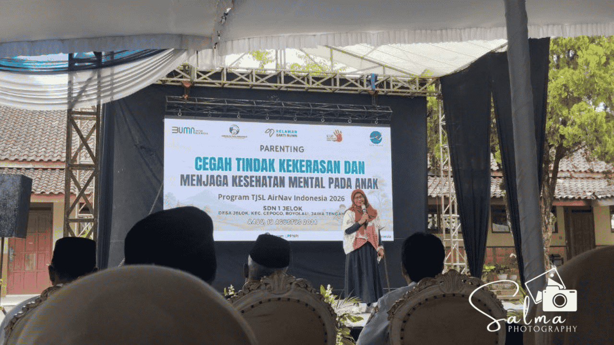

Hari ini, Rabu 19 Agustus 2026, dewan guru beserta semua orang tua/wali murid dari kelas 1 sampai kelas 6 MI Salafiyatul Ma'muroh mengikuti kegiatan parenting yang diselenggarakan di SDN 1 Jelok. Kehadiran para guru dan seluruh orang tua ini menunjukkan komitmen bersama dalam mendukung tumbuh kembang anak, tidak hanya dalam aspek akademik tetapi juga perlindungan psikologis dan emosional mereka. Acara yang berlangsung sejak pagi hari ini disambut dengan antusiasme yang tinggi oleh seluruh peserta yang hadir.
Kegiatan parenting ini merupakan bagian dari program Tanggung Jawab Sosial dan Lingkungan (TJSL) AirNav Indonesia 2026 yang berfokus pada isu penting di dunia pendidikan. Tema utama yang diangkat dalam kegiatan ini adalah cegah kekerasan dan menjaga kesehatan mental anak. Melalui pemaparan materi dari narasumber yang ahli di bidangnya, para peserta diberikan pemahaman mendalam mengenai pentingnya menciptakan lingkungan yang aman, baik di lingkungan sekolah maupun di rumah.
Dalam sesi pemaparan materi, narasumber menjelaskan berbagai bentuk kekerasan yang kerap tidak disadari serta tanda-tanda gangguan kesehatan mental yang mungkin dialami oleh anak-anak. Orang tua dan guru diajak untuk lebih peka terhadap perubahan perilaku anak serta membangun komunikasi yang terbuka dan hangat. Pendekatan dialogis ini dinilai sangat efektif untuk mencegah tindakan perundungan dan memastikan anak merasa didengar serta dihargai dalam setiap fase perkembangannya.
Pihak MI Salafiyatul Ma'muroh menyampaikan apresiasi yang tinggi atas terselenggaranya program TJSL AirNav Indonesia 2026 ini di wilayah Jelok. Dengan mengikuti kegiatan parenting ini, diharapkan sinergi antara madrasah dan orang tua semakin kuat dalam mengawal masa depan anak-anak. Bekal ilmu dan wawasan yang diperoleh hari ini akan langsung diterapkan dalam pola asuh sehari-hari demi mencetak generasi penerus bangsa yang sehat mental, berkarakter mulia, dan terbebas dari segala bentuk kekerasan.
← Kembali ke Beranda